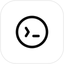

Se vad som går åt, vad som blir över och vilka konton som behövs.
Andel använd kvot före varje kontos egen reset.
Procent av respektive kontos kvot, inte tokens. Konton med olika planer har inte nödvändigtvis samma kapacitet. Sammanfattningen är ett oviktat medel per konto.